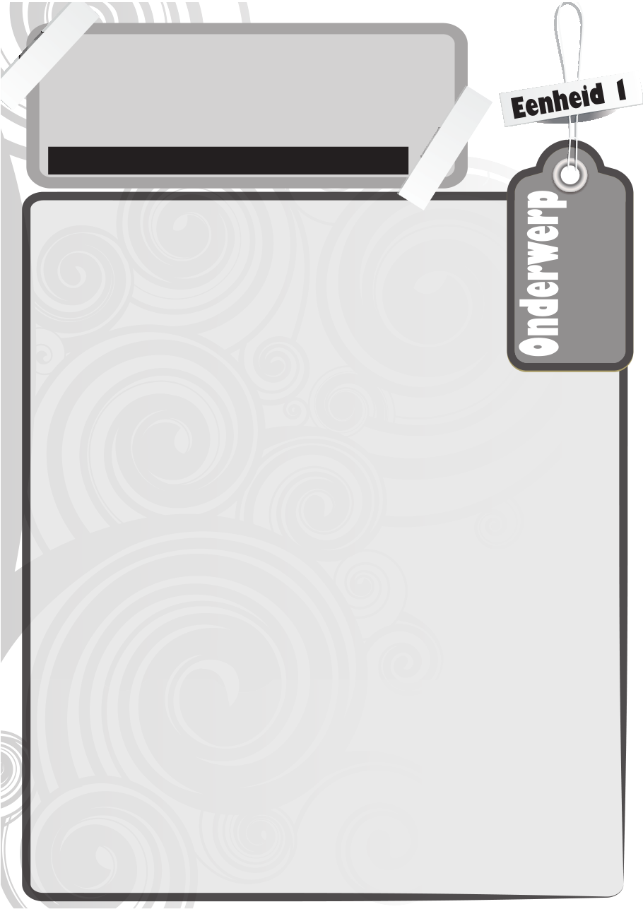

12
Hoe hoër jy op die akademiese leer klim, hoe meer sal jy besef dit is nou nie net meer vir klim nie. Die trappies het meer geword en hulle volg vinniger op mekaar as voorheen. Om alles te kroon, die helling het ook steiler geword!
Om suksesvol te klim tot waar jy wil wees, gaan meer van jou verg as voorheen. Hoe dan gemaak om aan die bopunt van die leer te kom?
4As jy suksesvolle bergklimmers bestudeer, sal jy sien hulle is suksesvol omdat hulle dinge gedoen kry. En om dinge gedoen te kry, is hulle besonder goed georganiseerd! Jy gaan beslis nie die piek van Everest bereik as jy halfpad ontdek jy het vergeet om jou yspik of handskoene in te pak nie.Kom ons breek susksesvolle mense se organisasieproses in drie eenvoudige stappe op, naamlik:• Organiseer• Fokus• Doen!Organiseer• oelwit Jy kan nie ’n berg gaan klim as jy nie weet hoekom jy die berg wil klim nie. Dit is ietwat laf om Tafelberg te gaan klim as jy bergklim haat, maar jou ma dink dit sal ’n oulike idee wees. As bergklim ’n passie vir iemand is, of as die bergklimmer weet waarom hy/sy die berg wil klim, dan begin die hele oefening eers regtig sin maak. Net so met jou skoolwerk. • eplan Goeie organisasie begin met die wete dat daar slegs 24 uur in ’n dag is. Niks meer en niks minder nie. Hierdie tyd tot jou beskikking moet baie goed beplan word indien jy enige kans op sukses wil hê (meer oor tydsbestuur in die volgende eenheid). Goeie beplanning is wanneer jy weet wat jy op ’n gegewe tydstip moet doen en wat jy nodig gaan hê om dit te doen. Daar is verskeie hulpmiddels om jou hiermee te help, waarvan die doenlysie die bekendste is. Onthou om die take op jou doenlysie in ’n volgorde van belangrikheid te rangskik. Behalwe dat die doenlysie jou help onthou wat jy moet doen, is daar ook ’n soort genoegdoening as jy ’n taak as afgehandel kan merk. Ander hulpmiddels is kalenders waarop jy belangrike datums kan aanbring, jou dagboek en natuurlik jou tuiswerkboek. Teken alle sperdatums, take en opdragte daarin aan. Die geheim bly egter om dit elke dag te raadpleeg, want net soos ’n bergklimmer se apparaat hulle nie self inpak nie, organiseer ’n tuiswerkboek dit nie self nie. As jy byvoorbeeld ’n groot taak het wat eers in die derde kwartaal voltooi moet wees, teken die inleweringsdatum aan, maar werk ook terug in jou dag/werkboek na die begindatum en teken vir jou datums aan waarteen jy jou vordering kan meet. • rioriteite Een van die belangrikse fasette van goeie beplanning is prioritisering. Met ander woorde om te besluit wat eerste gedoen moet word en wat die belangrikste op jou doenlysie is. Die oomblik as jy seker is oor wat jy wil bereik, kan jy prioritiseer. Skenk meer aandag aan die dinge waaruit jy die meeste voordeel sal kry. Volgens die bekende Paretobeginsel is slegs 20% van jou dagtake regtig belangrik en sal hierdie 20% uiteindelik 80% van die resultate sal lewer. Probeer dus so gou moontlik hierdie take identifiseer en fokus die meeste van jou energie om hierdie take suksesvol te organiseer. • erkplek Vir goeie organisasie is ‘n vaste plek waar jy kan studeer noodsaaklik. Dieselfde lessenaar/tafel en omgewing word later met studie geassosieer en dit sal jou help om vinniger te konsentreer. Hou hierdie leeromgewing van jou netjies en georganiseerd. Hou vakke se inligting in lêers bymekaar en moenie dat onnodige papiere jou werkplek besoedel nie. • Selkennis Probeer uitvind watter tyd van die dag jou energievlakke die hoogste is. Dit sal dan ook die aangewese tyd wees om die meeste werk gedoen te kry. Beplan dan jou doenlys en take hiervolgens
Hoe om jou werk te organiseer
Wêreld van werkdsestrsaardighede erantwoordaarheid in die itoering an erantwoordelikhede